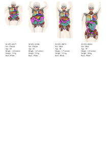

Respiratory Motion Explorer
Select a phantom and breathing pattern to explore three synchronized anatomical views.
Center for Virtual Imaging Trials · Carl E. Ravin Advanced Imaging Laboratories
Department of Radiology · Duke University School of Medicine · Durham, NC 27708
+Co-Senior Authors
Virtual Imaging Trials (VIT) offer a cost-effective and scalable approach for evaluating medical imaging technologies. Computational phantoms, which mimic real patient anatomy and physiology, play a central role in VIT. However, current phantom libraries face limitations in sample size and diversity. This study presents a framework for creating realistic computational phantoms using a suite of four deep learning segmentation models, with three forms of automated quality control. The result is a release of over 2,500 computational phantoms with up to 140 structures, available in both voxelized and surface mesh formats. Phantoms may be requested at cvit.duke.edu/resources.
For best experience, use Chrome on a desktop or laptop. Refresh if the viewer does not load.

If you find this work useful, please consider citing:
@article{dahal2025xcat,
title = {XCAT 3.0: A comprehensive library of personalized digital twins derived from CT scans},
author = {Dahal, Lavsen and Ghojoghnejad, Mobina and Vancoillie, Liesbeth and
Ghosh, Dhrubajyoti and Bhandari, Yubraj and Kim, David and Ho, Fong Chi and
Tushar, Fakrul Islam and Luo, Sheng and Lafata, Kyle J and others},
journal = {Medical Image Analysis},
pages = {103636},
year = {2025},
publisher = {Elsevier}
}Select a phantom and breathing pattern to explore three synchronized anatomical views.